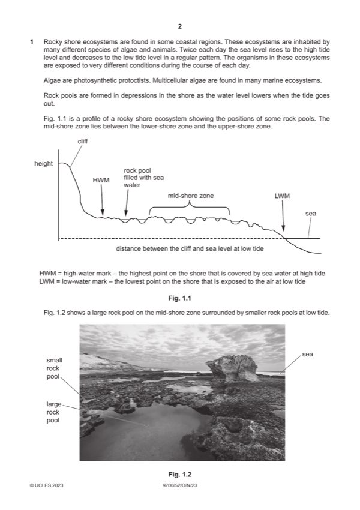

Question 1

Original paper page 2
Part 1(a) — solution
any two from 2
Mark points
- Include the ideas shown in the solution above.
Part 1(b)(i) — solution
there is no correlation between, species diversity / number of (different) species and depth ; 1
Mark points
- Include the ideas shown in the solution above.
Part 1(b)(ii) — solution
any three from 3
Mark points
- Include the ideas shown in the solution above.
Part 1(b)(iii) — solution
1. scatter diagram, does not indicate, a linear, relationship ; 1
2. (data is) not normally distributed ;
3. species diversity / number of species, is not continuous ;
Mark points
- Include the ideas shown in the solution above.
Part 1(c) — solution
any two from 2
Mark points
- Include the ideas shown in the solution above.
Part 1 — solution
location of the rocky shore is unknown ;
Mark points
- Include the ideas shown in the solution above.
Part 1(d) — solution
any seven from 7
sampling process
Mark points
- Include the ideas shown in the solution above.